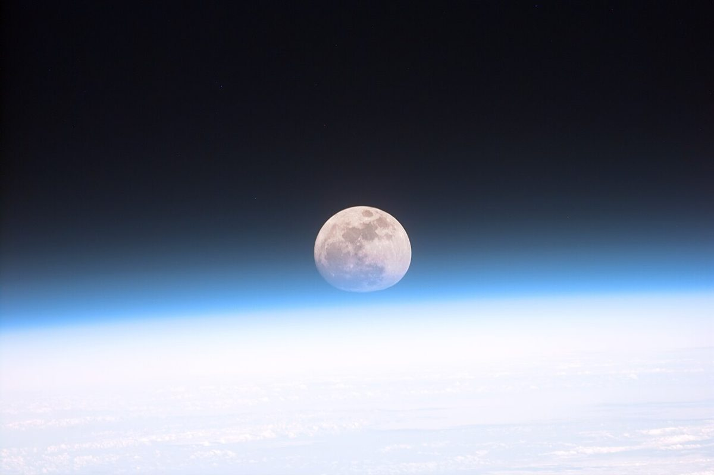
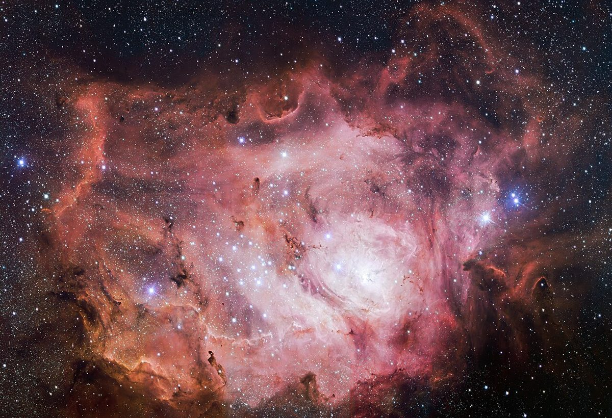
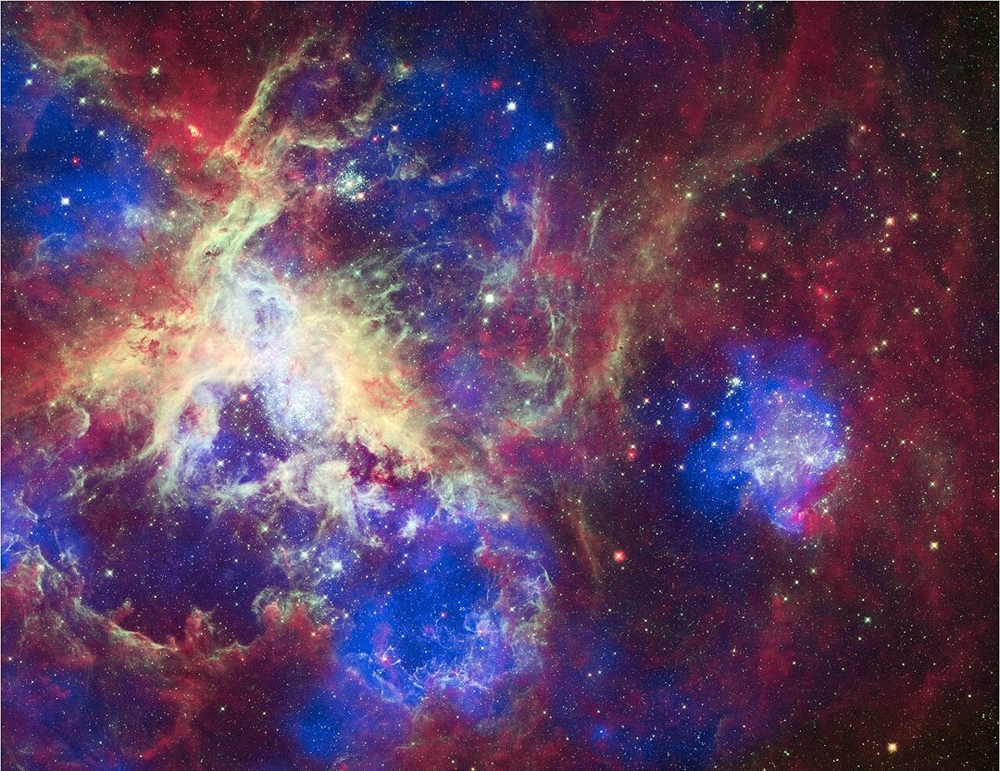
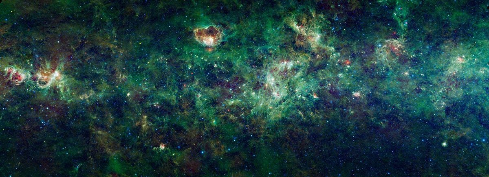

制作側の連想
入れ子の「Nest」と、宇宙の「Space」。
店名の由来は分かりません。ここから先は制作側の連想で、お店の理念・由来とは無関係です。「Nest」を「入れ子(ひとつの中に次の段が収まる構造)」、「Space」を「宇宙」と読み替えて、多段式ロケットの切り離しをこのサイトの構成にしました。ホームで点火し、店のこと・メニュー・口コミと段を切り離しながら進み、アクセスで軌道に乗ります。
宇宙からのイメージ写真
切り離された段の向こう側。
写真はお店のものではなく、国外・宇宙・撮影地不明のフリー素材のイメージです。大阪府堺市の風景ではありません。




ご案内
お店のこと(確認できたものだけ)
| 所在地 | 〒590-0904 大阪府堺市堺区南島町2丁51-1 |
|---|---|
| 電話 | なし |
| 営業時間 | 準備中 |
| 定休日 | 準備中 |
| ご予約 | 準備中 |
| 駐車場 | 準備中 |
| SNS | Instagram @nest_space_ |